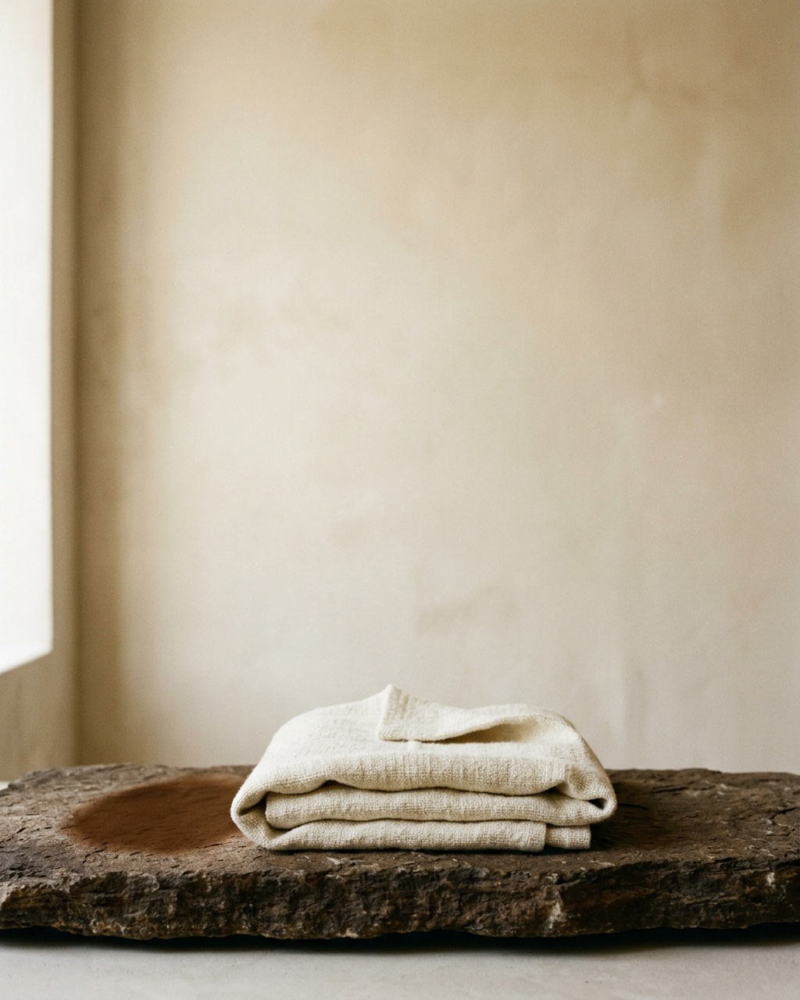
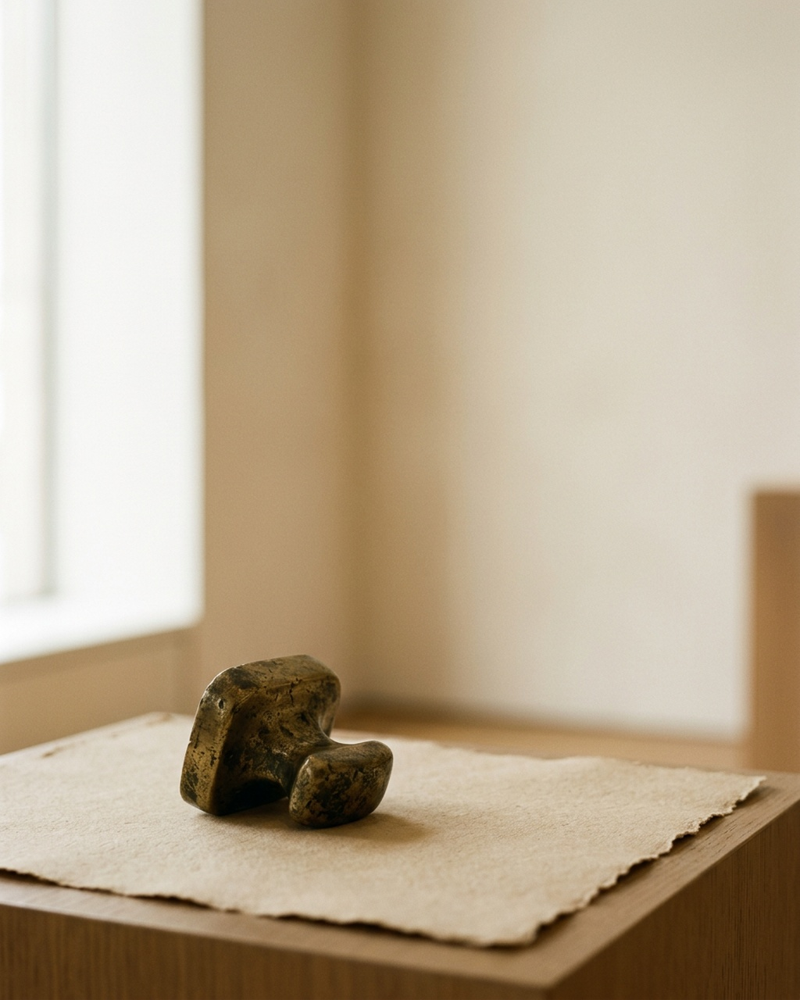
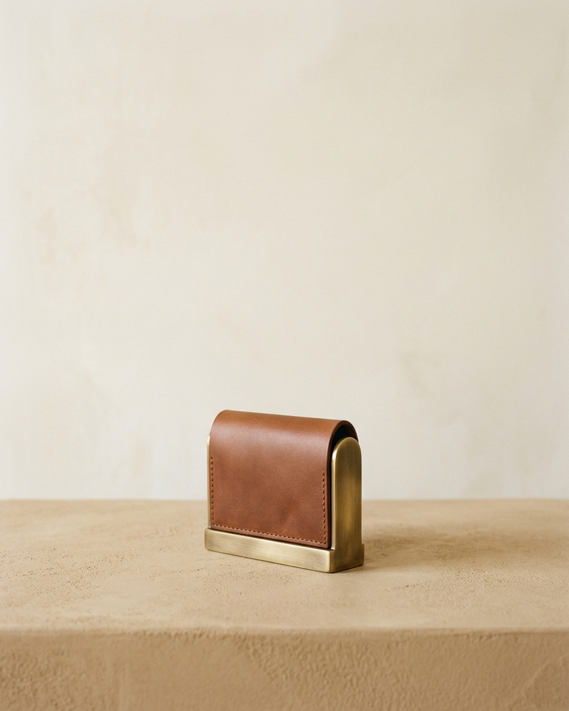
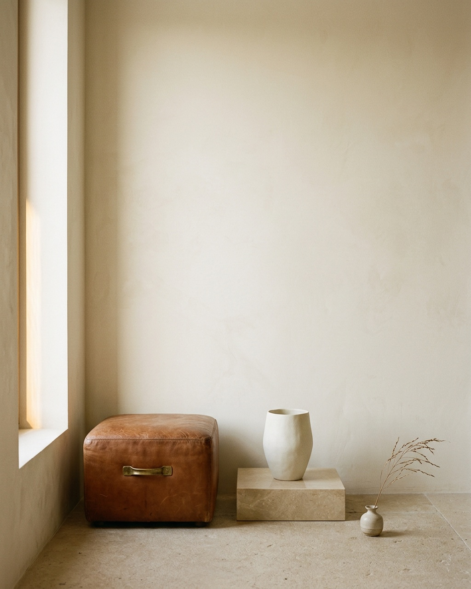

Monograph I · Frontispiece
The art of keeping still.
One object, followed through one day of light. The house makes fewer than forty pieces a year and asks of the people who keep them only patience. What follows is the day a single piece spends on the bench — from the first grey of the north window to the last of the cognac at dusk.

II · Provenance
A hundred unhurried years.

The house was founded in 1924 by a saddler's daughter who had noticed, watching her father, that the last hour of any piece of work was the one that decided it — and that the last hour was the one nobody was paid for. She took three rooms above the rue de Solenne, hired two people who could be trusted to be slow, and made a rule that has not been broken since: nothing leaves the atelier until it has been looked at in every light the rooms afford.
This is a practical rule, not a poetic one. Leather lies. Under the flat grey light of a north window a hide shows its grain honestly; at noon the same hide flattens and forgives; by evening, when the sun comes low through the west casement, every mark of the burnisher stands up like a hill. A seam that passes at nine may fail at five. So the piece waits on the bench for a day, and someone walks past it, and looks.
The ledger
Every piece made here is entered by hand in a ledger that now runs to eleven volumes: the date it was begun, the date it was finished, the hide, the hands, and — in a column no other house keeps — the weather. The register is not shown to clients. It exists because the house believes that provenance is a habit before it is a claim, and that a thing written down slowly is harder to lie about later.
Nothing leaves the atelier until it has been looked at in every light the rooms afford.House rule, 1924
Still in force
Four generations on, the rooms are the same three rooms. The windows have not been enlarged; the light, which is the only instrument the house has ever trusted, has not been improved. What has changed is the list of people willing to wait. It has become long. The house has responded by making no more than it did before.
III · The Object
One object, considered in every light.
Noon · flat light · 5500 K

The north window gives a flat, honest light. The grain of the hide reads exactly as it is; nothing is forgiven yet.
The shadow shortens to almost nothing. This is the light the piece is judged in: every seam, every edge, at the same distance from the eye.
The sun comes low through the west casement and turns to cognac. The brass takes it first; the leather, a little later, keeps it.
IV · Atelier
Made in three rooms, judged by one window.
By half past five the west casement lays a bar of light across the plaster. It is the last light of the working day and the only one the house fully trusts.

| Leather | Bridle, cognac, vegetable-tanned; hand-burnished edges |
|---|---|
| Frame | Brass, unlacquered. It is meant to darken. |
| Dimensions | 108 × 72 × 22 mm |
| Hands | Two. The same two, start to finish. |
| Time | Eleven weeks, three of them waiting on the bench |
| Looked at in | Every light the rooms afford |
| Mark | The house seal, inside, where only the owner sees it |
V · Enquire
Request an audience with the house.
The house makes a small number of pieces each year, by enquiry only. If you would like to commission one — and to wait the time it properly takes — the house keeps a quiet correspondence with those who understand the value of patience.
Begin a correspondence By letter · fewer than forty pieces a year · the ledger is kept